Project Overview
SauShun is an application that makes global proxy buying more accessible and convenient for everyone. We overturn the traditional proxy model by inviting travelers from around the world to become our partners. Travelers simply accept tasks, purchase designated items, and deliver them upon returning home, earning shipping fees with ease. SauShun allows users to access new overseas products, limited editions, and unique items that traditional proxy services cannot offer, putting an end to complicated processes and high costs with no extra proxy fees.
This project was developed for an entrepreneurship competition, which influenced both the timeline and the scope of the prototype. The following case study reflects those constraints.
The Problem
Inefficient Access to Overseas Products
Cross border shopping remains frustrating for buyers who want limited edition items, new overseas releases, or unique regional goods. Traditional proxy buying services impose high fees, rely on slow consolidated shipping that can take weeks or months, and require complex coordination. As a result, desirable international products stay out of reach, and buyers face unnecessary delays and costs.
Trust Deficit in Proxy Purchasing
Individual proxy buyers often lack credibility, making it difficult for customers to verify reliability before committing to a purchase. Fraud risks are common, and each transaction demands excessive time for communication, order placement, and follow up. Peer to peer marketplaces offer little protection, requiring self arranged meetups and leaving price disputes unresolved. Large proxy companies charge premium prices without guaranteeing trust. This trust deficit discourages users from engaging with cross border shopping, limiting access to authentic, fairly priced products.
Research & Discovery
User Research
Our research is grounded in lived experience. The founding team members are regular users of proxy purchasing services. Through years of buying overseas limited‑edition products and navigating traditional proxy channels, we have directly encountered the same frustrations that many consumers face. This internal, experience‑driven insight forms the foundation of our problem definition and design decisions.
We supplemented our personal knowledge by observing common complaints across online communities (social media, forums, review platforms), analyzing existing proxy platforms to identify recurring pain points in their user journeys, discussing informally with fellow proxy buyers and frequent travelers to validate our assumptions.
Target Audience
The solution serves two primary user groups. The first group is Overseas Shopping Demanders, or Buyers. These are people who want limited edition, region exclusive, or new release products not available locally. They are frustrated by high proxy fees, long consolidation waits, and unclear communication, and they are often hesitant to trust unknown individual proxy sellers due to fraud risks.
The second group is Cross Border Travelers, or Carriers. These include frequent travelers such as tourists, students abroad, business travelers, flight attendants, and tour guides. They have unused luggage capacity and are open to earning small fees by carrying items, but they dislike arranging meetups and prefer a simple, low effort process.
Ideation & Exploration
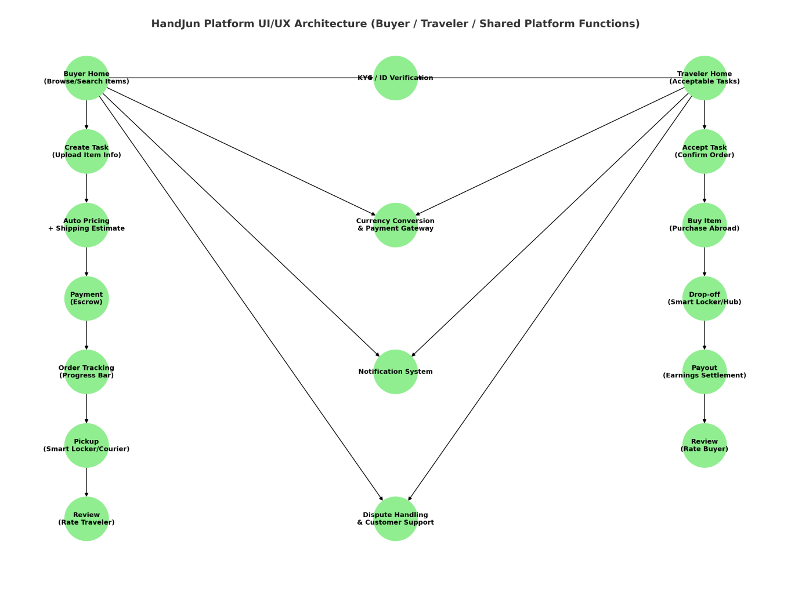
A brief user flow.
Brainstorming
The initial brainstorm resulted in a simple user flow covering the full lifecycle of a task, from discovering goods to completing purchase. For buyers, this includes browsing, creating a task with item details, receiving an automated price and shipping estimate, making an escrow protected payment, tracking the order, picking up the item from a smart locker or courier, and finally leaving a review. For travelers, the flow starts with viewing acceptable tasks, accepting an order, purchasing the item abroad, dropping it off at a smart locker or hub, receiving earnings settlement, and then rating the buyer.
A more detailed user flow with decision points will be presented later in this case study.
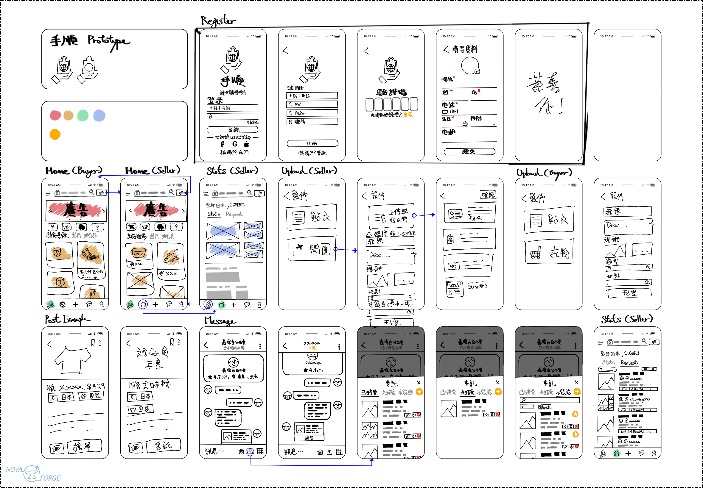
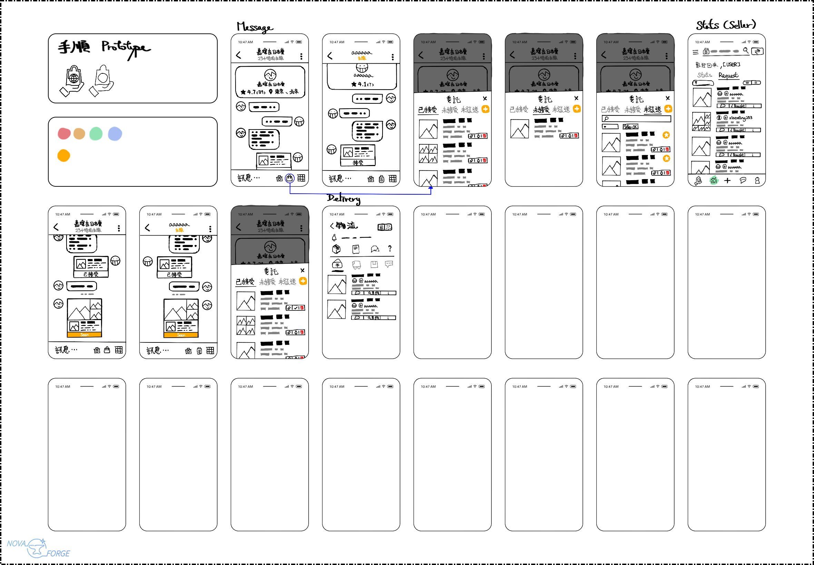
Low‑fidelity sketch of SauShun’s core screens and navigation.
Low‑fidelity Wireframes
With the user flow mapped out, I moved into low-fidelity wireframing. I first created a basic template on my PC, then transferred it to my iPad in Procreate to begin sketching. This setup allowed me to iterate quickly while keeping the layouts clean and consistent. At this stage, a clear image of the app's interface began to emerge. Key screens included a separate home page for buyers and travelers, a stats page, distinct upload flows for each user type, a post screen, and a private messaging page. Because we already had a brief user flow defined, simple linking between pages was established, making the navigation logic easy to test and refine.
High‑Fidelity Design
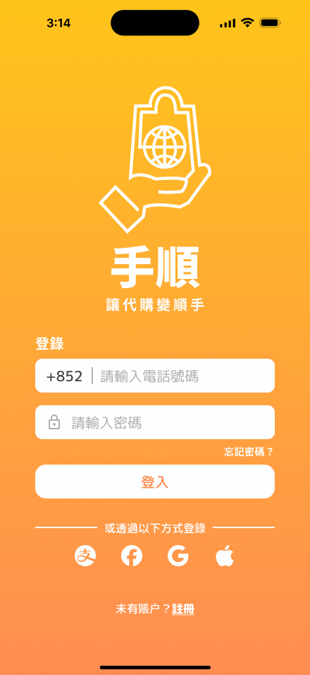
Login page of Saushun.
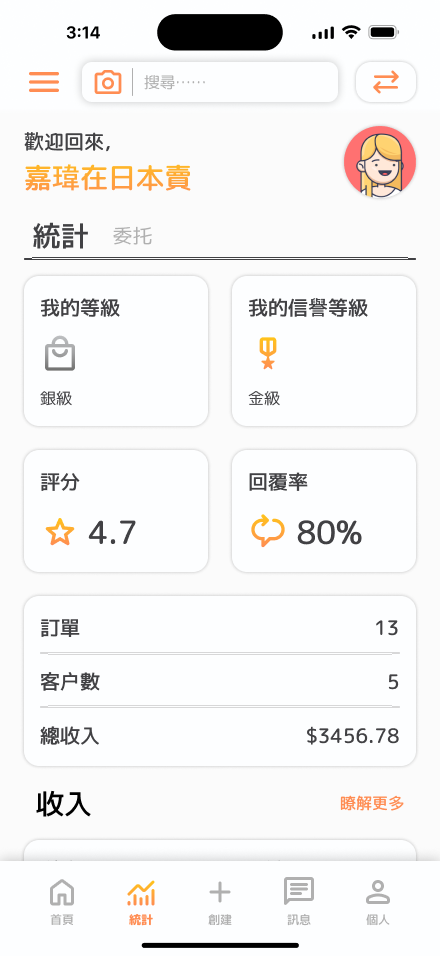
Stats - Statistics page for seller.
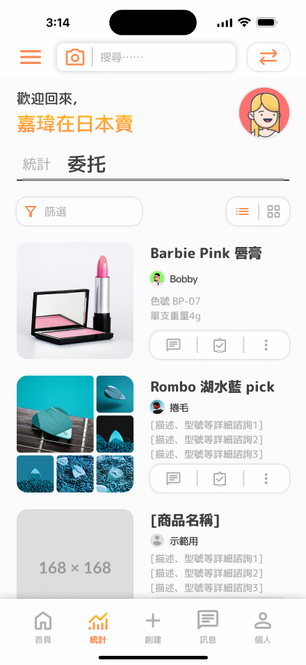
Stats - Commission page for seller.
Saushun logo by Ian Chui.
Visual Direction
The high‑fidelity design adopts a minimal yet warm visual language. Platforms of this type typically require displaying large amounts of data, which makes UI design particularly challenging. I focused on keeping every screen as compact as possible while preserving a clean, minimal impression.
The primary color is orange. It brings energy and enthusiasm, which serves a strategic purpose on a proxy purchase platform: gently encouraging users to explore and buy. The overall warmth of orange also softens the data‑heavy interface, making it feel more inviting.
For typography, we use Rounded Mplus 1c paired with Slightly Work Sans. The rounded terminals add approachability, while the sans‑serif clarity ensures readability across dense information panels.
The logo and key illustrations are credited to Ian Chui, an illustrator. Their work reinforces the brand identity with a distinctive, handcrafted feel that balances the functional UI.
Key UI Components & Modular Design System
The interface relies on a robust set of reusable components. These include a base bar, navigation bar, advertisement slideshow, data panels for sellers, different message box variants, multiple variants of username cards, and different request card variants.
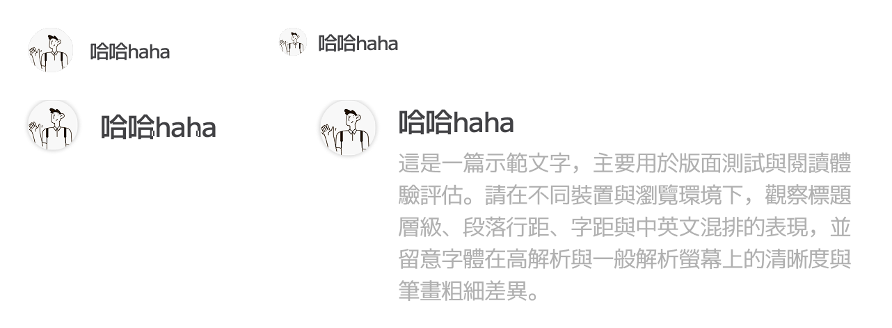
Username cards in various layouts
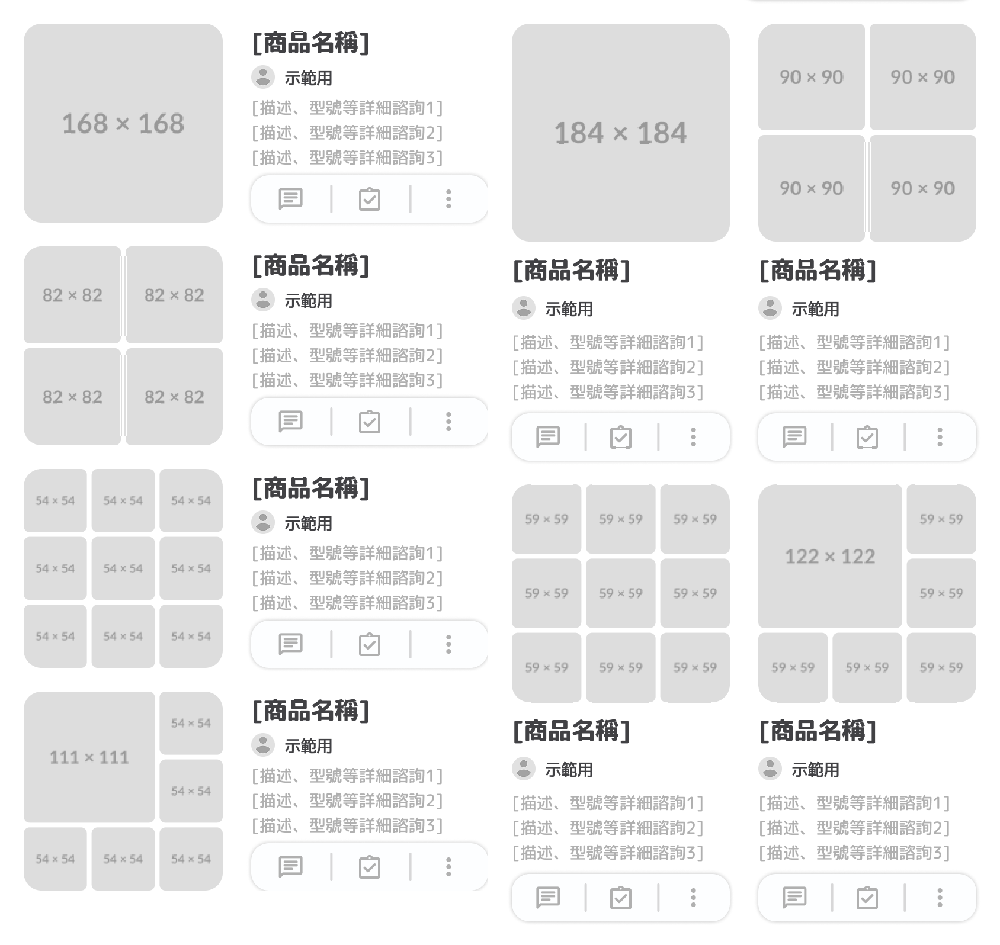
Request cards with list and grid layouts, varying picture limits
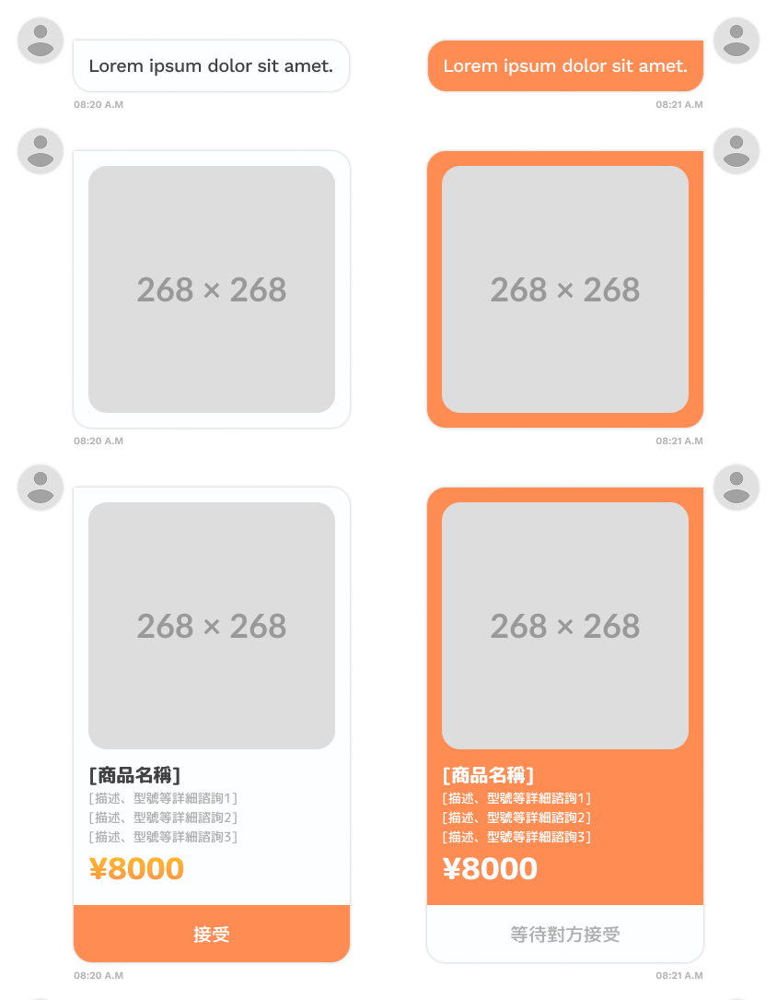
Message boxes for different conversation states
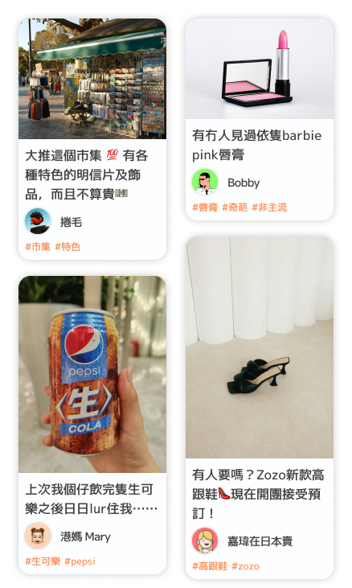
Saushun masonry post layout

Xiaohongshu reference layout
A signature component is the uneven height posts. This design pattern was first introduced in ArtMax and is inspired by Xiaohongshu. The uneven heights allow the layout to accommodate pictures of various sizes while maintaining a clean, minimal sight. More importantly, the variation in height prevents the view from feeling rigid, adding a natural, vibrant rhythm to the feed.
For more design examples, including additional components and screen variations, please check the gallery section above.
Prototype
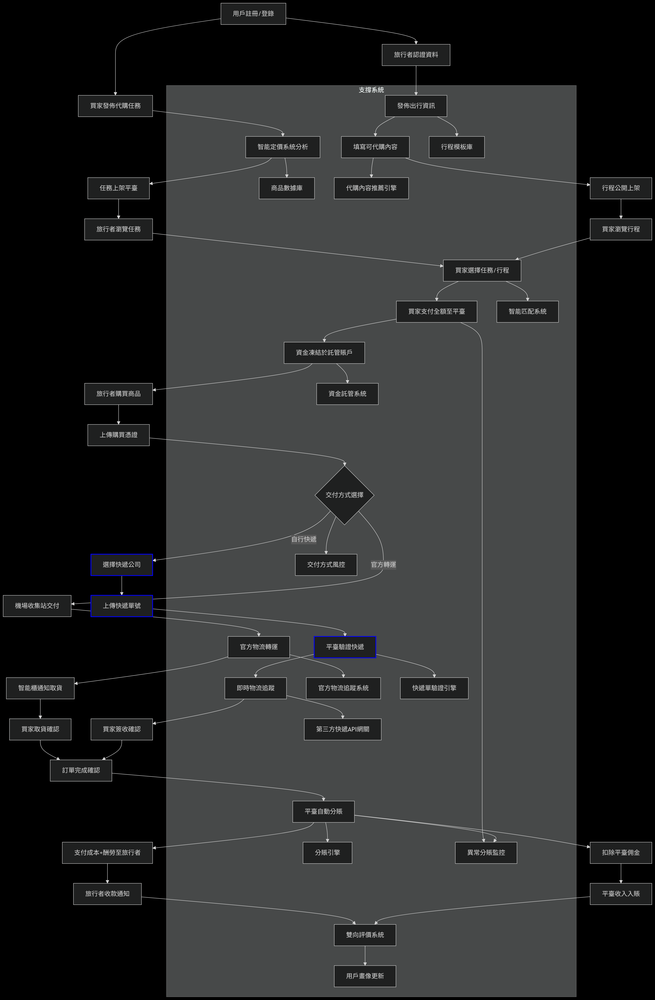
User flow diagram for buyers and sellers
The user flow map shown beside was actually created by the tech team earlier in the process, before high‑fidelity design began. It is comprehensive, covering everything from registration and verification to payment, delivery options, tracking, and dispute resolution. However, some parts of this map are backend logic rather than UI‑relevant interactions. My role as a designer was to filter through this complexity and identify which screens and flows actually needed to be built for the prototype.
Based on the map, I selected the following screens: basic registration and welcome page, main dashboard for buyers and sellers, a stats and commission page for sellers, a messaging system, seller post creation (supporting both regular posts and group buying), and the traveler task interface. These were the core surfaces needed to demonstrate the platform's value.
Using the high‑fidelity screens already designed, I built a clickable prototype covering just these selected areas. It does not simulate every backend‑driven step like escrow payment or delivery tracking. But for the purpose of the competition submission, this scope is sufficient. The prototype clearly shows how buyers and sellers navigate their respective dashboards, create posts, communicate, view earnings, and accept tasks. It keeps the experience focused, coherent, and true to our minimal warm vision.